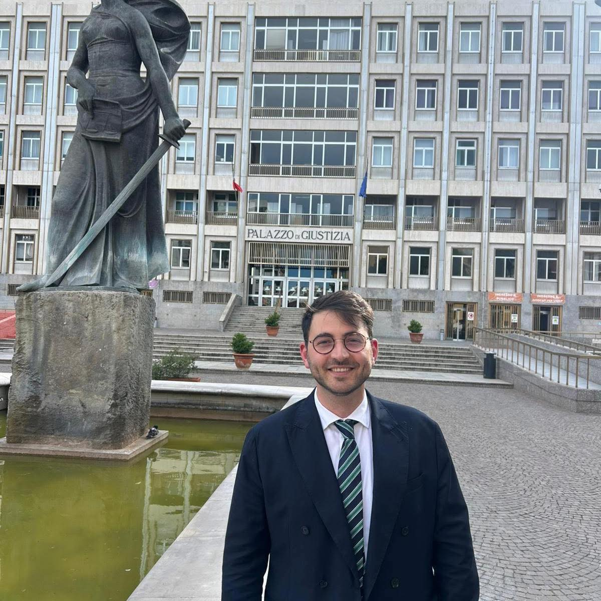

Una generazione che non aspetta. Vitandrea Baccellieri porta idee nuove, energia giovane e un progetto concreto per il futuro di Sannicandro.

Chi è
Vitandrea Baccellieri è cresciuto a Sannicandro. Ha studiato qui, ha costruito le sue amicizie qui, conosce i problemi di questo paese perché li vive ogni giorno sulla propria pelle.
Non è un politico di professione. È una persona che ha deciso di mettersi in gioco perché crede che Sannicandro meriti di più — e che i giovani abbiano il diritto di costruire il futuro del posto in cui vivono.
La sua candidatura nasce dall'ascolto: delle famiglie, dei ragazzi, di chi ogni giorno sceglie di restare e di chi è andato via ma vorrebbe tornare.
Il Programma
Idee concrete, non slogan. Ogni punto nasce dall'ascolto diretto delle persone che abitano questo paese.
I giovani non devono scegliere tra restare e realizzarsi. Creiamo le condizioni perché possano fare entrambe le cose qui.
Gli spazi vuoti diventano luoghi di incontro. La cultura non è un lusso — è il collante di una comunità viva.
Chi ha meno di 35 anni deve avere un posto al tavolo delle decisioni. Non domani — adesso.
Unisciti
Questo progetto non è di Vitandrea — è di chiunque creda che Sannicandro possa essere un posto migliore. Lascia i tuoi contatti, vieni a un evento, condividi un'idea.